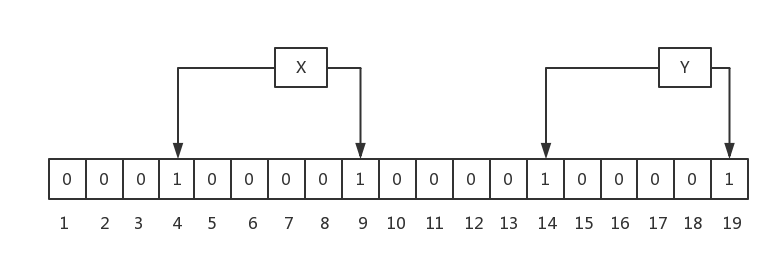
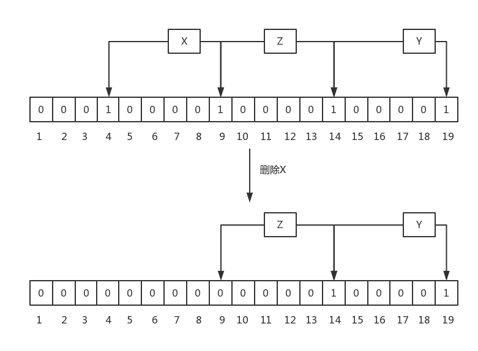

布隆过滤器——检查一个元素是否在一个集合中——可能存在或者一定不存在
原理：一个bit array，多个hash函数
规则一：Bloom Filter中插入一个元素，会使用k个hash函数，来计算出k个在bit array中的位置，然后，将bit array中这些位置的bit都置为1
这种方法的好处在于，不需要一个元素用一个bit位置表示，从而可以压缩hash表长度。比如，原本的bit array一个bit位置表示一个元素，n个bit位置可以表示n个元素的准确存在性，而用了Bloom Filter之后，当用k个hash函数时，n个bit位置理论上最多可以表示Cnk个元素的可能存在性。在牺牲准确性的基础上，这种存法极大地节约了空间。

规则二：Bloom Filter中查找一个元素，会使用和插入过程中相同的k个hash函数，取出每个bit位置对应的值，如果所有bit都为1，则返回元素可能存在，否则，返回元素不存在
在Bloom Filter的查询过程中，当判定某个元素可能存在于某一集合之后，就需要进一步进入到集合中确定元素的准确存在性，第二遍查询会造成进一步的性能开销，如果集合中元素原本不存在Bloom Filter却给出元素存在，那相当于白费了第二遍的查询开销。因此，Bloom Filter的假正率(false positive probability)就成为影响Bloom Filter性能一个重要的指标。最好的Bloom Filter应该具有尽可能低的假正率。
假设一个Bloom Filter的有k个hash函数H1(⋅)∼HK(⋅)，其bit array有m位A1∼AM，要在其集合S插入N个元素s1∼sN，则假正率P为：
P=(1−(1−M1)KN)K≈(1−e−MKN)K
当实际插入的元素个数N=105时，上述公式图形如下：

且其中的假正率P和hash函数数量的关系如下图：

一般来说，bit array长度M取实际插入的元素个数N的10倍。hash函数数量一般为5-10个。
规则三：最后，Bloom Filter中不允许有删除操作
因为删除后，可能会造成原来存在的元素返回不存在。
Bloom Filter只允许假正而不允许假负，即不能对一个本来存在的元素报不存在，但是下面这种删除情况就会出现假负：

因此布隆过滤器在实际使用时一般只增不删。
附：证明Bloom Filter的假正率表达式
∵对于k个hash函数，在大样本情况下，每个元素的Hash都能使对bit array中的每一位以均等的概率被置1，即对于k=1,⋯,K和n=1,⋯,N有
(∀i,j=1,⋯,M)P(Hk(sn)=i)=P(Hk(sn)=j)
∵hash函数的输出值不能大于bit array位数
∴对于k=1,⋯,K和n=1,⋯,N有
m=1∑MP(Hk(sn)=m)=1
∴对于k=1,⋯,K、n=1,⋯,N和m=1,⋯,M有
P(Hk(sn)=m)=M1
也即插入一个元素时一个hash函数使bit array中的某一位置1的概率。
∴插入元素sn后bit array中m位为0的概率为
Pn(Am=0)=k=1∏K(1−P(Hk(sn)=m))=(1−M1)K
其中n=1,⋯,N且m=1,⋯,M
∴插入全部n个元素后bit array中m位为0的概率为
P(Am=0)=n=1∏NPn(Am=0)=(1−M1)KN
∵假正率可以看作一个集合中不存在的新元素sN+1的k个hash函数在bit array中的对应位全部为1的概率，即
P=k=1∏KP(AHk(sN+1)=1)
∴假正率为
P=k=1∏KP(AHk(sN+1)=1)=k=1∏K(1−P(AHk(sN+1)=0))=(1−(1−M1)KN)K
∵当M足够大时有
M→∞lime−M1∼M→∞lim1−M1
∴原式可化为
M→∞limP=M→∞lim(1−(1−M1)KN)K=(1−M→∞lim(1−M1)KN)K≈(1−e−MKN)K
与其他算法的对比
优点
能够用于集合元素存在性测试的还有这些常见算法：hashmap，set，bit array。相对于这些算法布隆过滤器有这些优势：
- hashmap是一个指针数组，一个指针的开销是sizeof(void *)，在64bit的系统上是64bit，在32位系统上是32bit，如果用链地址法处理冲突还要更多空间。而正如前文所述，Bloom Filter中n个bit位置理论上最多可以表示Cnk个元素的可能存在性，空间利用率远比hashmap大不少
- 对于平衡树方式实现的set，一个节点需要一个指针存储数据的位置，两个指针指向其子节点，空间开销比hashmap还大
- 单纯的bit array相当于Bloom Filter只有一个hash函数的特殊情况，因此如果要获得和BloomFilter相同的误判率，则需要比Bloom Filter更大的存储空间（见上面的图）
缺点
- hashmap和set不会出现误判的情况，而Bloom Filter有一定的假正率
- bit array只要一次hash而Bloom Filter要多次hash
使用场景
一组元素存在于磁盘中，数据量特别大，应用程序希望在元素不存在的时候尽量不读磁盘，此时，可以在内存中构建这些磁盘数据的Bloom Filter，实际的集合在磁盘中，Bloom Filter的bit array在内存：
- 写操作：将内容写入磁盘，并同时写入Bloom Filter
- 查询操作：
- 先读内存中的Bloom Filter
- 如果Bloom Filter返回不存在，则不必再读磁盘
- 如果Bloom Filter返回可能存在，则再读磁盘确认准确的存在性
Bloom Filter和hashmap实际性能分析
按照上述查询操作的过程分析Bloom Filter和hashmap的实际性能差距。
时间复杂度
假设在内存中Bloom Filter计算的时间开销为T0，从硬盘中读取的开销为T1，那么Bloom Filter查到元素存在和假正的开销为：
T存在=T假正=T0+T1
不存在的开销为：
T不存在=T0
再假设Bloom Filter返回元素存在的概率为P0，假正率为P，则查询一个元素的平均开销为：
TBF=P存在T存在+P假正T假正+P不存在T不存在=(P0−P)(T0+T1)+P(T0+T1)+(1−P0)T0=T0+P0T1
而对于一个hashmap，若其中存储与此Bloom Filter相同的元素，并且有相同的内存和硬盘性能开销，那么其返回一个元素存在的概率为：
P存在=P0−P
其查询一个元素的平均开销为：
Thashmap=P存在T存在+P不存在T不存在=(P0−P)(T0+T1)+(1−(P0−P))T0=T0+(P0−P)T1
因此Bloom Filter和hashmap的性能差距为：
ΔT=TBF−Thashmap=PT1
空间复杂度
而由前文的所述，Bloom Filter中bit array长度M取实际插入的元素个数N的10倍；而hashmap若存储地址则每个元素至少需要32bit的空间（32位机）或64bit空间（64位机）。其空间消耗可以表示为：
CBF=10N
Chashmap∈{32N,64N}
可见，Bloom Filter以ΔT的性能牺牲换取了3-6倍的空间利用率提升。